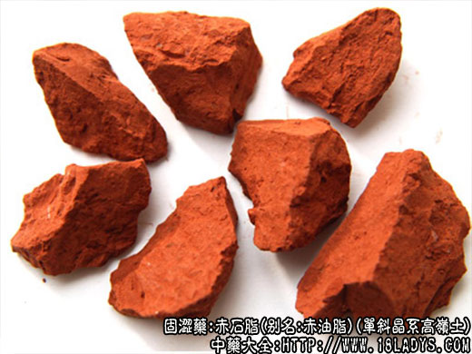

赤石脂为少常用中药。始载《神农本草经》，列为上品。商品有赤、白两种，药用以赤者为主。
别名：赤油脂。
来源：为单斜晶系高岭土。多生于岩石的风化带和粘土层中。
产地：主产于福建、山东、河南等地。
性状鉴别：为矿土类，呈土样结块状，大小不一。浅红色、紫红色或棕红色、深浅不一。光滑油腻，易粉碎。断面深浅色层相同，形成大理石样花纹。吸水性甚强，舌触之有吸附性。有土腥气，味淡。
以浅红色，光滑细腻，吸水性强，无砂石夹杂者为佳。
主要成分：含硅硫铝、铁、钙、镁和少量锰。
药理作用：收敛而止泻止血。
1、止泻，对肠道内异常的发酵产物和炎症渗出物有吸附作用，对发炎的胃肠粘膜有保护作用，因而有助于止泻。
2、止血，能显著缩短家兔血浆再钙化时间。
炮制：碾压，醋拌成块状，煅透，有时捣碎。
性味：甘、涩、温。
归经：入肾、大肠经。
功能：涩肠止泻，敛疮。
主治：久泻，久痢脱肛，便血，崩漏带下；外用治溃疡久不收敛。
临床应用：为治疗久痢的常用药。
1、治久痢和腹泻属虚泻、寒泻者。
对慢性痢疾（虚寒痢），有脓血便，腹痛喜按者，常配干姜、粳米，加强温中散寒作用，方如桃花汤，气虚者再加党参、白术。
对慢性结肠炎所谓休息痢者（时愈时发、大便夹杂粘液白冻如鱼脑，里急后重），配干姜、川连、黄芩、加强驱风、消炎作用。
2、治虚汗性月经过多和便血，轻者配补骨脂，稍重者加配止血药和其他固涩药，如炒乌梅、禹余粮等。
使用注意：本品温而固涩，有实热、急性肠炎、早期痢疾等不宜用。
用量：9～24g。
处方举例：
桃花汤（《伤寒论》）：赤石脂18g、干姜6g、糯米（或高粱米）60g、水8杯，先煮米，得4杯后去米，入干姜和赤石脂9g，煎剩3杯，分3次服，每次服用时又冲赤石脂3g，服下。